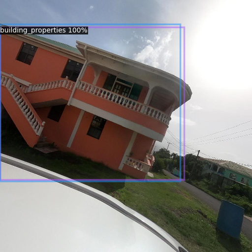
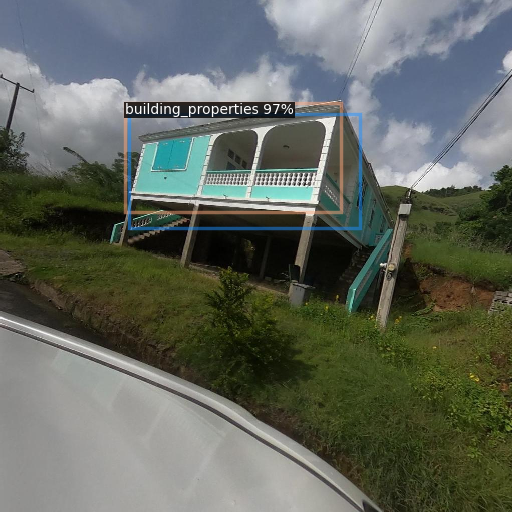
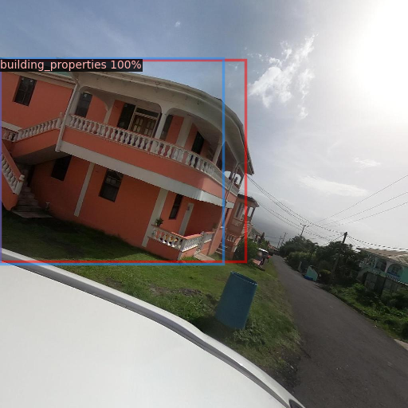
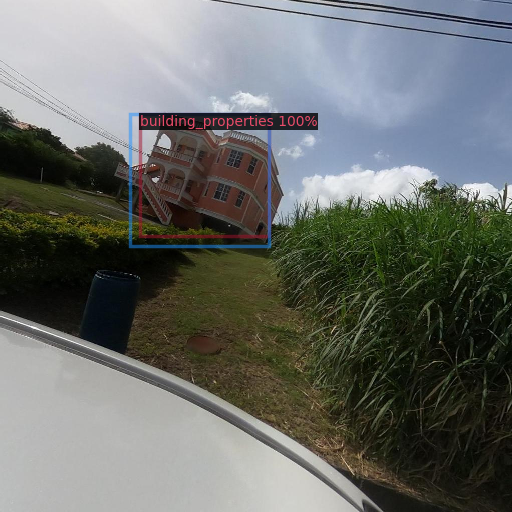
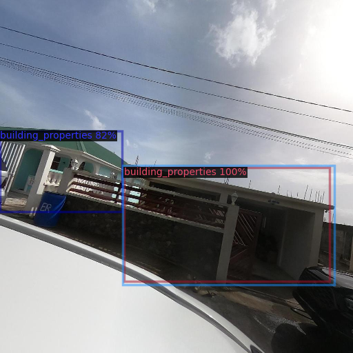
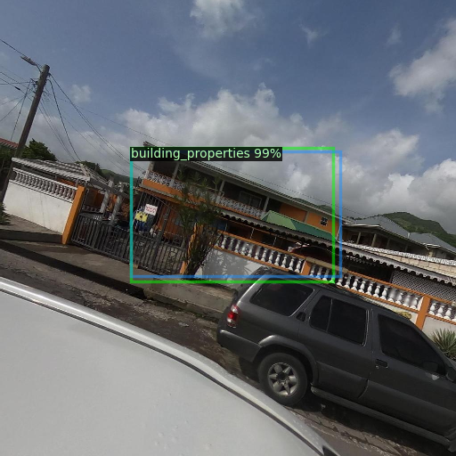

Detection Evaluation#
To evaluate the object detection performance of our trained Detectron2 model, we are focusing on mean average precision (mAP).
Mean Average Precision (mAP):#
Mean Average Precision (mAP) is a popular evaluation metric used in object detection tasks to assess the performance of models. It combines two important metrics: precision and recall.
Precision: Precision measures the accuracy of the positive predictions made by the model. It is calculated as the ratio of true positive predictions to the total number of positive predictions (true positives + false positives).
Precision = True Positives / (True Positives + False Positives)
Recall: Recall measures the model’s ability to correctly identify all positive instances in the dataset. It is calculated as the ratio of true positive predictions to the total number of actual positive instances (true positives + false negatives).
Recall = True Positives / (True Positives + False Negatives)
Average Precision (AP) is calculated by computing the precision-recall curve for the model’s predictions and then taking the average precision across all recall values. Mean Average Precision (mAP) is simply the mean of the average precisions calculated for each class in the dataset.
Results#
mAP = 0.81
Usage#
The script detector_evaluate.py facilitates the evaluation of object detection performance using the trained Detectron2 model.
It performs the following tasks:
Registers COCO-formatted datasets for evaluation.
Loads test dataset annotations.
Loads the trained model checkpoint.
Performs inference on the test dataset using the trained model.
Calculates mean average precision (mAP).
Notable functions#
convert_xywh_to_xyxy(bbox_list)#
Description: Converts bounding box coordinates from xywh to xyxy format. The trained model predicts boxes in
[xmin, ymin, ymax, ymax]stated otherwise[x bottom left, y bottom left, x top right, y top right]format, however the ground truth annotations are encoded as[x top left, y top left, width, height]format per default COCO format. Thus, this function converts the ground truth format to match the prediction format.Args:
bbox_list (list): List of bounding boxes in xywh format.
Returns:
list: List of bounding boxes in xyxy format.
main(annotations_dir, images_dir, cpkt_path)#
Description: Main function for evaluating object detection performance.
Args:
ANN_DIR (str): Path to the directory containing dataset annotations.IMG_DIR (str): Path to the directory containing dataset images.CPKT_PATH (str): Path to the trained model checkpoint.
How to Run#
Make sure the environment is set up, see “Setting up your environment”: Ensure you have Detectron2 and the other dependencies installed in your environment. Also make sure you have access to a single GPU for a training experiment.
Prepare Dataset: Make sure you have access to the COCO formatted JSON annotation files and corresponding images stored in a directory.
Have a model trained: Make sure you have access to a trained Detectron2 model checkpoint.
Run the Script: Execute the script with the images directory, annotations directory, and path to the trained model checkpoint as command-line arguments:
python detector_evaluate.py <ANN_DIR> <IMG_DIR> <CPKT_PATH>
Replace
ANN_DIRwith the path to the directory containing COCO-formatted JSON annotations.Replace
IMG_DIRwith the path to the directory containing images.Replace
CPKT_PATHwith the path to the trained model checkpoint file.
Evaluation: The script will perform inference on the test dataset using the trained model and calculate mAP.
Visual results#
These are some visual results from the test set. The blue boxes are the ground truth. The captioned multi-color boxes are predictions. The percentage in each caption indicates the model’s confidence.
     